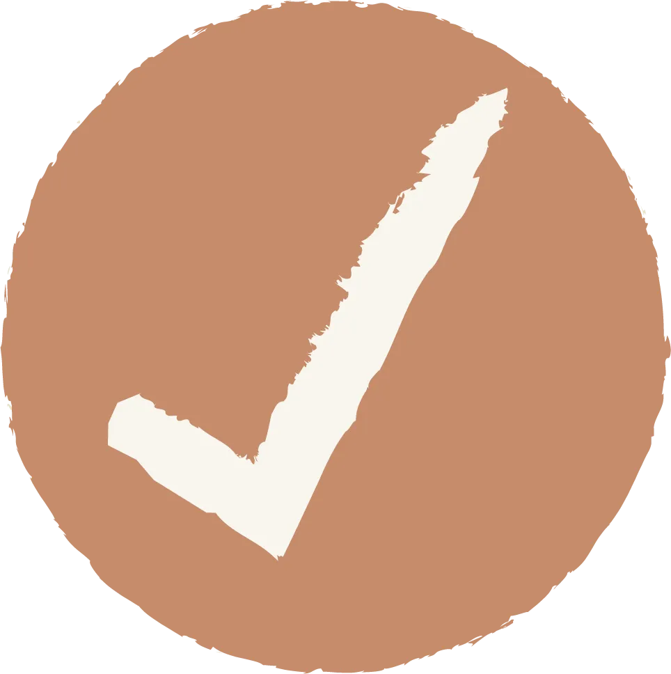

Delivery
Method™
Method™
Las tres piezas trabajan sobre lo mismo: lo que de verdad te pasa en el trabajo.
Breaking Barriers at Work es un programa personalizado de cinco meses para mujeres profesionales con inglés intermedio que necesitan participar, explicar, presentar y desenvolverse mejor en las situaciones reales de su trabajo.
No se trata de empezar inglés de nuevo. Se trata de aprender a recuperar, organizar y usar mejor lo que ya sabes cuando de verdad importa.
Quiero saber si es para mí →Para profesionales B1–B2 que ya usan inglés en su trabajo.

Te vas a reconocer acáEl problema no es que no seas suficientemente profesional. Y tampoco necesariamente que «te falte más inglés». Es que todavía no entrenaste cómo usar lo que ya sabes bajo presión, en las situaciones reales de tu trabajo.
Clases tradicionales. Business English. Gramática. Listas de vocabulario. Conversación con una profesora. Frases para reuniones. Correcciones.
Todo eso puede haberte dado conocimiento. Pero saber más no siempre significa poder usarlo cuando tienes que responder, explicar, liderar o presentar.
Te enseñaron contenido. No necesariamente te enseñaron a convertir tu propio trabajo en entrenamiento.
No necesitas más contenido aislado. Necesitas un sistema para entrenar tu comunicación real. El Delivery Method™ convierte tus situaciones de trabajo en material de práctica.
Tu trabajo real → práctica autónoma → coaching de comunicación → aplicación real
Las tres piezas trabajan sobre lo mismo: lo que de verdad te pasa en el trabajo.
El objetivo: autonomía, no dependencia.
Trabajas con tus reuniones, presentaciones, conversaciones, proyectos y situaciones reales. No con ejercicios armados para practicar.
No todos los errores significan lo mismo. Detectamos qué está frenando la comunicación y elegimos cómo entrenarlo.
Lo practicado tiene que volver a aparecer en tu trabajo real. Si no llega ahí, no sirvió.
Dejas de repetir los errores que arrastras hace años.
El vocabulario que ya reconoces empieza a salirte cuando lo necesitas.
Llegas a tu próxima reunión real habiéndola entrenado antes.
Siete cambios concretos. No son estados de ánimo: son cosas que empiezas a hacer —o que dejas de evitar— en tu trabajo real.
Intervienes, opinas y abordas conversaciones que antes evitabas.
Recuperas y aplicas lo que ya sabes en situaciones reales, en vez de depender de frases memorizadas.
Ordenas ideas, priorizas lo importante y te expresas con mayor claridad. Y en vez de leer la presentación, la explicas.
Reformulas, continúas y respondes aunque no tengas todo preparado, aunque no te salga una palabra o te equivoques.
Usas situaciones reales para detectar qué trabajar y cómo practicarlo.
Aprendes qué observar, qué entrenar, qué herramienta usar y cómo llevarlo a tu trabajo.
Mejoras tu comprensión del inglés hablado real y tu inteligibilidad, sin perseguir un acento perfecto.

Yo tenía miedo de solo saludar a mi jefe en inglés. Hoy ya hablo, ya digo, ya explico, ya me paro enfrente de una presentación y digo las cosas como las pienso y expreso mi punto de vista. Cosa que no hacía antes, por miedo, por inseguridad, por creer que nunca me iban a entender.
Mi mismo jefe me dice: «Sol, ya empiezas a ser más participativa. Antes como que no te gustaba discutir en inglés, y ahorita ya empiezas a discutir más.»
Es el primer curso que me está ayudando a identificar todas esas áreas de oportunidad que yo no había visto, y que las estoy trabajando por primera vez.
Las clases parten de un contexto y las vas dirigiendo de acuerdo con las capacidades de cada una. No se siente como una clase genérica «para cumplir»: realmente hay un objetivo detrás.
Cada vez me doy más cuenta de que sí entiendo, y que hay muchas situaciones cotidianas que puedo abordar de manera simple, con estructura, sin enredarme tanto.
Siento que he ganado más confianza. Me has ayudado a entender que sí puedo, que solo tengo que arriesgarme más y hacerlo.
I noticed that since a couple of meetings now he's not asking «what do you mean?» anymore. I felt less nervous. I gave myself the chance to use other words.
Decidí dejar de evaluarme tanto. Ahora estoy desafiando activamente a mis colegas en reuniones para expresar desacuerdo y proponer alternativas. Antes me quedaba callada.
Bots, Delivery Method™ y material real de tu trabajo. La acomodas tú, cuando te queda mejor.
Me muestras qué pasó, qué practicaste, dónde te trabaste y qué situación necesitas resolver. Lo leo antes de vernos.
60 minutos conmigo para diagnosticar, practicar, corregir, hacer retry y decidir qué trabajar después.
No recibes el mismo programa aplicado igual que todas. El road map es común; el diagnóstico y la aplicación son tuyos.

Desde muy joven fue mucho más que una materia. Fue curiosidad, libertad y confianza: un lugar donde podía expresarme, descubrir otras formas de ver el mundo y sentir que se abrían posibilidades.
Esa conexión me llevó a recibirme de traductora pública y profesora, a vivir Madrid y Londres, y a dedicar más de dieciocho años a enseñar inglés. Sobre todo, me llevó a acompañar a mujeres inteligentes, preparadas, con una carrera enorme detrás.
Y con el tiempo empecé a ver algo que se repetía: mujeres que sabían inglés, pero que al entrar en una reunión, presentar una idea o recibir una pregunta inesperada dejaban de sonar como las profesionales que eran.
No les faltaba capacidad. Tampoco necesitaban empezar de cero. Necesitaban aprender a llegar al inglés que ya tenían cuando había presión, ordenar mejor lo que querían decir, y entrenar con las situaciones reales de su trabajo.
Estudié un máster en liderazgo ejecutivo y neurociencias justamente para entender eso: por qué el idioma que sabemos deja de estar disponible cuando hay presión, y cómo se entrena para que vuelva. De ahí sale el método — la repetición corta, el segundo intento, entrenar la situación antes de que ocurra.
Por eso creé AT WORK. Porque sé lo que es tener la idea clara en la cabeza y no poder decirla como la pensaste. Y porque ninguna mujer debería sentirse menos preparada, menos inteligente o menos profesional por estar hablando en otro idioma.
Mi trabajo no es solamente enseñar inglés. Es ayudarte a encontrar tu voz en inglés y a ocupar tu lugar como la profesional que ya eres.
Quiero que el inglés también sea tu lugar seguro. No porque no te equivoques, sino porque vas a saber que tienes los recursos para comunicarte, resolver lo inesperado y seguir adelante aunque no te salga la frase perfecta.
La recomendación es entrenar en bloques cortos varias veces por semana. Como referencia, alrededor de tres prácticas de cuarenta minutos.
Incluye todo el programa más el acompañamiento 1:1 semanal.
Sí, aproximadamente B1–B2. Lo vemos antes de que pagues nada, y no lo evalúo por tu puesto ni por lo que creas de tu inglés: lo evalúo por tu producción real.
No exactamente. Incluye coaching 1:1, pero dentro de un sistema, un road map y una metodología.
Una clase particular adapta el contenido a ti y te corrige. Eso acá también pasa, pero es el piso. La diferencia es que hay un recorrido con un orden pensado, herramientas con sus bots, bibliotecas de práctica y un Weekly Report donde veo cómo vas entre sesión y sesión.
Sí, cuando afecta tu comunicación. No como syllabus enciclopédico.
Trabajamos los patrones que aparecen en tus reuniones y en tus mails, que son los que te están frenando hoy.
Sí, orientada a inteligibilidad — que te entiendan sin esfuerzo—, no a eliminar tu acento.
Tu acento no es el problema. Nunca lo fue.
Puede reprogramarse avisando con 24 horas de anticipación. Con menos de 24 horas la sesión puede darse por utilizada, salvo excepciones.
El programa grabado y las bibliotecas, durante los cinco meses. Los bots permanecen disponibles después, porque funcionan sobre ChatGPT.
Sí, porque la práctica se construye con tu propio contexto y tu material de trabajo. Trabajo con managers y directoras de operaciones, IT, finanzas, HR y compliance, y el método se arma sobre lo que cada una trae.
No del todo, y tampoco es el objetivo. Los nativos también cometen errores; lo que no hacen es frenarse por eso.
Lo que sí vas a hacer es detectar los tuyos: cuáles repites, de dónde viene cada uno y cómo entrenarlo. Y a medida que los reconoces, empiezan a aparecer menos — sin que tengas que revisar cada frase por dentro antes de decirla.
Breaking Barriers at Work está diseñado para ayudarte a entrenar cómo participas, explicas, presentas y te desenvuelves en inglés, usando las situaciones que realmente enfrentas en tu trabajo.
Quiero entrar al programa →